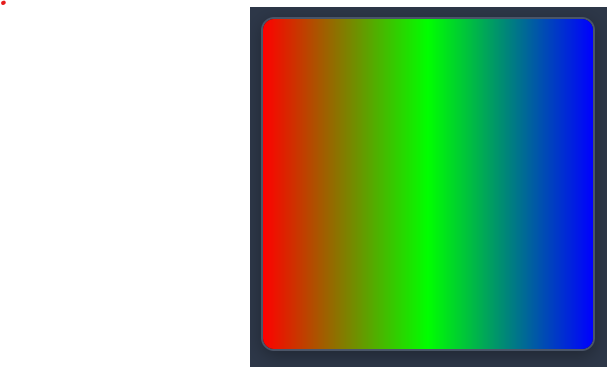
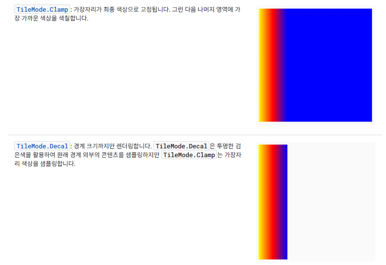
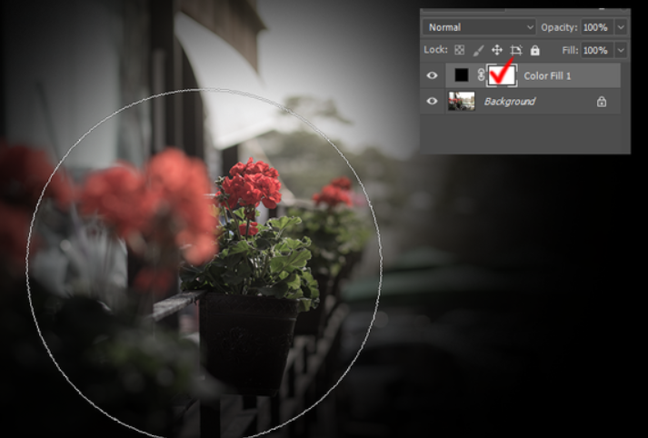
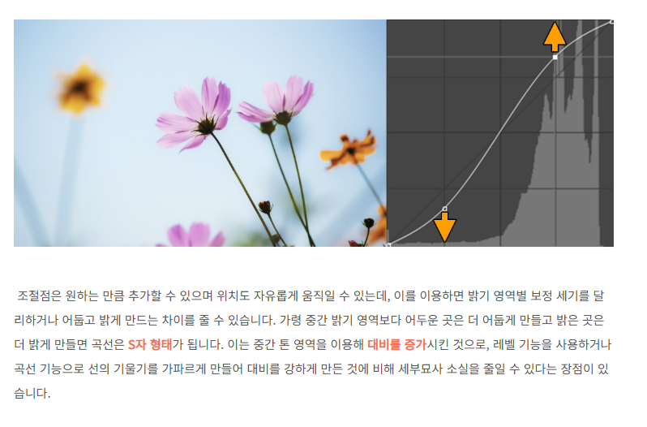

이미지 샘플링 해보기
학습 목표
이미지 샘플링을 해보자. (eval 함수)mix 함수 사용해보자.
https://thebookofshaders.com/glossary/
그래프 그려보기 ( 라이브러리 포함 )
- 랜덤 함수
// Catmull-Rom-Splines float y = 0; float4 control = float4(0.0, 0.15, 0.85, 1.0); // R 채널 if (p.x < 1.0/3.0) { // 구간1: y0 -> y1 (p0=y0, p1=y0, p2=y1, p3=y2) float t = p.x * 3.0; float t2 = t * t; float t3 = t2 * t; float p0 = control.x; float p1 = control.x; float p2 = control.y; float p3 = control.z; y = 0.5 * ( (2.0*p1) + (-p0 + p2) * t + (2.0*p0 - 5.0*p1 + 4.0*p2 - p3) * t2 + (-p0 + 3.0*p1 - 3.0*p2 + p3) * t3 ); } else if (p.x < 2.0/3.0) { // 구간2: y1 -> y2 (p0=y0, p1=y1, p2=y2, p3=y3) float t = p.x * 3.0 - 1.0; float t2 = t * t; float t3 = t2 * t; float p0 = control.x; float p1 = control.y; float p2 = control.z; float p3 = control.w; y = 0.5 * ( (2.0*p1) + (-p0 + p2) * t + (2.0*p0 - 5.0*p1 + 4.0*p2 - p3) * t2 + (-p0 + 3.0*p1 - 3.0*p2 + p3) * t3 ); } else { // 구간3: y2 -> y3 (p0=y1, p1=y2, p2=y3, p3=y3) float t = p.x * 3.0 - 2.0; float t2 = t * t; float t3 = t2 * t; float p0 = control.y; float p1 = control.z; float p2 = control.w; float p3 = control.w; y = 0.5 * ( (2.0*p1) + (-p0 + p2) * t + (2.0*p0 - 5.0*p1 + 4.0*p2 - p3) * t2 + (-p0 + 3.0*p1 - 3.0*p2 + p3) * t3 ); }
SKSL 실습 코드
미리보기
CanvasKit 로딩 중...
함수 연습
- Mix 함수 연습 1 ( x 축으로 블랜딩 )
https://thebookofshaders.com/glossary/?search=mix
uniform float2 iResolution; uniform shader iTexture; half4 main(float2 fragCoord) { float2 uv = fragCoord / iResolution; float3 colorA = float3(1, 0, 0); // Red float3 colorB = float3(0, 1, 0); // Green return mix(half4(colorA, 1.0), half4(colorB, 1.0), uv.x); //return uv.x * half4(colorB, 1.0) + (1.0 - uv.x) * half4(colorA, 1.0); }
- Mix 함수 연습 2 ( y 축으로 블랜딩 )
uniform float2 iResolution; uniform shader iTexture; half4 main(float2 fragCoord) { float2 uv = fragCoord / iResolution; float3 colorA = float3(1, 0, 0); // Red float3 colorB = float3(0, 1, 0); // GREEN return mix(half4(colorA, 1.0), half4(colorB, 1.0), uv.y); //return uv.y * half4(colorB, 1.0) + (1.0 - uv.y) * half4(colorA, 1.0); }
- Mix 함수 연습 3 ( 3개의색 블랜딩 )
실습
정규화 영역 [0~0.5] red, green 보간
정규화 영역 [0.5~1.0] green blue 보간

uniform float2 iResolution; uniform shader iTexture; half4 main(float2 fragCoord) { float2 uv = fragCoord / iResolution; float3 colorA = float3(1, 0, 0); // Red float3 colorB = float3(0, 1, 0); // GREEN float3 colorC = float3(0, 0, 1); // BLUE float3 mixColorA = mix(colorA, colorB, clamp(uv.x * 2., 0., 1.)); float3 mixColorB = mix(colorB, colorC, clamp((uv.x - .5) * 2., 0., 1.)); if (uv.x < 0.5) return float4(mixColorA, 1.0); else return float4(mixColorB, 1.0); }
이미지 필터
- 이미지 샘플링 함수
uniform float2 iResolution; uniform shader iTexture; half4 main(float2 fragCoord) { float2 uv = fragCoord / iResolution; return iTexture.eval(uv * iResolution); }


- 이미지 샘플링 사용한 이펙트
uniform float2 iResolution; uniform float iTime; uniform shader iTexture; float PI = 3.141592; float random (in vec2 st) { return fract(sin(dot(st.xy, vec2(12.9898,78.233))) * 43758.5453123); } float noise (in vec2 st) { vec2 i = floor(st); vec2 f = fract(st); // Four corners in 2D of a tile float a = random(i); float b = random(i + vec2(1.0, 0.0)); float c = random(i + vec2(0.0, 1.0)); float d = random(i + vec2(1.0, 1.0)); vec2 u = f * f * (3.0 - 2.0 * f); return mix(a, b, u.x) + (c - a)* u.y * (1.0 - u.x) + (d - b) * u.x * u.y; } half4 main (float2 fragcoord) { vec2 st = fragcoord.xy/iResolution.xy; float scale = 2.0; float offset = 0.5; float angle = noise( st + iTime * 0.1 ) * PI; float radius = offset; st *= scale; st += radius * vec2(cos(angle),sin(angle)); vec4 color = iTexture.eval(st * iResolution); return color; }
흑백 필터 알고리즘
- 흑백 필터
< 휘도 계산 Luminance >
RGB(255, 0, 0)인 빨강, RGB(0, 255, 0)인 녹색, RGB(0, 0, 255)인 파랑은 모두 동일한 강도(255)를 가짐
우리 눈에는 녹색이 가장 밝아 보이고 파랑이 가장 어두워 보인다.
이는 인간의 눈이 색상별로 느끼는 밝기 감도가 다르기 때문이며,
어떤 색이 **“얼마나 밝게 보이는가”**를 수치로 나타낸 값을 **휘도(Luminance)**라고 한다.
그레이 스케일이 뭘까요 ?
흑백 변환, 커브 조정, 비네팅 등의 밝기 기반 필터를 구현할 때는,
픽셀의 색을 직접 사용하는 대신 샘플링한 색상을 휘도로 변환해 사용하는 것이 일반적이다.
ITU-R Recommendation 색공간 감도 계수 (가중치)
세 값을 더하면 1이 되는 정규화 과정을 거친 값들임.
- Rec.601 (0.299, 0.587, 0.114)
- Rec.709 (0.2126, 0.7152, 0.0722)
- Rec.2020 (0.2627, 0.6780, 0.0593)
uniform float2 iResolution; uniform shader iTexture; half4 main(float2 fragCoord) { float2 uv = fragCoord / iResolution; half4 c = iTexture.eval(uv * iResolution); half linear = (c.r + c.g + c.b) / 3.0; half recommend = dot(c.rgb, half3(0.299, 0.587, 0.114)); if (uv.x < 0.5) return half4(linear, linear, linear, c.a); return half4(recommend , recommend, recommend, c.a); }
- 흑백 필터 연습 1
실습
아래 영역에서 해당하는 색공간 휘도 계산해서 흑백으로 표현해봅시다 (3개의 영역이 나와야 합니다)
0 ~ 0.3 = linear, 0.3 ~ 0.6= Rec.601, 0.6 ~ 1.0 = Rec.709
uniform float2 iResolution; uniform shader iTexture; half4 main(float2 fragCoord) { float2 uv = fragCoord / iResolution; half4 c = iTexture.eval(uv * iResolution); half linear = (c.r + c.g + c.b) / 3.0; half recommend = dot(c.rgb, half3(0.299, 0.587, 0.114)); half recommend2 = dot(c.rgb, half3(0.2126, 0.7152, 0.0722)); if (uv.x < 0.3) return half4(linear, linear, linear, c.a); else if (uv.x < 0.6) { return half4(recommend , recommend, recommend, c.a); } return half4(recommend2 , recommend2, recommend2, c.a); }
- 흑백 필터 연습 2
실습
If 문을 Step 으로 변경 해보자. Step을 사용하면 0 또는 1의 값만 나오기 때문에, mix 함수를 사용하게 되면 조건문 처럼 사용가능.
uniform float2 iResolution; uniform shader iTexture; half4 main(float2 fragCoord) { float2 uv = fragCoord / iResolution; half4 c = iTexture.eval(uv * iResolution); half4 colorA = half4(half3((c.r + c.g + c.b) / 3.0), 1.); half4 colorB = half4(half3(dot(c.rgb, half3(0.299, 0.587, 0.114))), 1.); half4 colorC = half4(half3(dot(c.rgb, half3(0.2126, 0.7152, 0.0722))), 1.); // 방법 1 순차적 mix 방법 half4 color; color = colorC; color = mix(color, colorB, 1. - step(0.6, uv.x)); color = mix(color, colorA, 1. - step(0.3, uv.x)); // 방법 2 마스킹 방법 float maskA = 1.0 - step(0.3, uv.x); // ~ 0.3 float maskB = step(0.3, uv.x) * (1.0 - step(0.6, uv.x)); // 0.3 ~ 0.6 float maskC = step(0.6, uv.x); // 0.6 ~ color = colorA * maskA + colorB * maskB + colorC * maskC; return color; }
컬러 필터 알고리즘
- Invert
uniform float2 iResolution; uniform shader iTexture; half4 main(float2 fragCoord) { float2 uv = fragCoord / iResolution; half4 c = iTexture.eval(uv * iResolution); return half4(1.0 - c.rgb, c.a); }
- Tint
uniform float2 iResolution; uniform shader iTexture; float3 tint = float3(1, 0, 0); // (1,0,0) = red tint float amount = 1; half4 main(float2 fragCoord) { float2 uv = fragCoord / iResolution; half4 c = iTexture.eval(uv * iResolution); c.rgb = mix(c.rgb, c.rgb * tint, amount); return c; }
- Vinete Effect 1

uniform float2 iResolution; uniform shader iTexture; half4 main(float2 fragCoord) { float2 uv = fragCoord / iResolution; half4 color = iTexture.eval(uv * iResolution); half vignette = 1. - smoothstep(0.2, 0.5, length(uv - 0.5)); return half4(color.rgb * vignette, color.a); }
- Vinete Effect 2
Vinete Effect 1의 경우는 동일한 픽셀에 비네팅 강도 적용
어두움 픽셀도 밝은 픽셀도 똑같이 어두워 짐으로, 명암 대비 안좋고 어두움 픽셀은 더 어두워지는 경향.
휘도를 사용하여 어두운 곳은 덜어둡고, 밝은곳은 더 어둡게 처리
uniform float2 iResolution; uniform shader iTexture; half4 main(float2 fragCoord) { float2 uv = fragCoord / iResolution; half4 color = iTexture.eval(uv * iResolution); half base = 1.0 - smoothstep(0.2, 0.5, length(uv - 0.5)); //return half4(color.rgb * base , color.a); half luma = dot(color.rgb, half3(0.2126, 0.7152, 0.0722)); half strength = mix(0.2, 2.2, luma); half vignette = pow(base, strength); return half4(color.rgb * vignette, color.a); }
컬러 커브 알고리즘
- Color Curve 기초
컬러 커브를 사용하는 이유는 사진을 선명하게 만드는 것
즉 채도는 높게 해야 한다.
채도를 높이기 위해 중간값 밝게, 어두운 값 어둡게

uniform float2 iResolution; uniform shader iTexture; half curve(half x) { return x * x * (3.0 - 2.0 * x); // return smoothstep(0.0, 1.0, x); } half4 main(float2 fragCoord) { float2 uv = fragCoord / iResolution; half4 color = iTexture.eval(uv * iResolution); // 각 채널에 커브 적용 color.r = curve(color.r); color.g = curve(color.g); color.b = curve(color.b); return color; }
- Color Curve
https://pleasefixthebug.tistory.com/entry/Catmull-Rom-Splinesuniform float2 iResolution; uniform shader iTexture; // 각 채널 y값 (x는 0, 1/3 ,2/3, 1 고정) //float4 curveRY = float4(0.00, 0.33, 0.66, 1.0); // R 채널 //float4 curveGY = float4(0.00, 0.33, 0.66, 1.0); // G 채널 //float4 curveBY = float4(0.00, 0.33, 0.66, 1.0); // B 채널 float4 curveRY = float4(0.05, 0.15, 0.85, 1.0); // R 채널 float4 curveGY = float4(0.05, 0.20, 0.90, 1.0); // G 채널 float4 curveBY = float4(0.05, 0.10, 0.80, 1.0); // B 채널 half catmull(float p0, float p1, float p2, float p3, float t) { // 표준 Catmull-Rom (tension=0.5 근사; 여기선 표준계수) float t2 = t*t, t3 = t2*t; return 0.5 * ( (2.0*p1) + (-p0 + p2) * t + (2.0*p0 - 5.0*p1 + 4.0*p2 - p3) * t2 + (-p0 + 3.0*p1 - 3.0*p2 + p3) * t3 ); } half evalCurve(float x, float4 y) { x = clamp(x, 0.0, 1.0); // 구간: [0, 1/3], [1/3, 2/3], [2/3, 1] if (x < 1.0/3.0) { float t = x * 3.0; return catmull(y.x, y.x, y.y, y.z, t); } else if (x < 2.0/3.0) { float t = x * 3.0 - 1.0; return catmull(y.x, y.y, y.z, y.w, t); } else { float t = x * 3.0 - 2.0; return catmull(y.y, y.z, y.w, y.w, t); } } half3 applyCurve(half3 c) { half r = clamp( evalCurve(c.r, curveRY), 0., 1. ); half g = clamp( evalCurve(c.g, curveGY), 0., 1. ); half b = clamp( evalCurve(c.b, curveBY), 0., 1. ); return half3(r,g,b); } half4 main(float2 fragCoord) { float2 uv = fragCoord / iResolution; half4 c = iTexture.eval(uv * iResolution); half3 o = applyCurve(c.rgb); // return c; return half4(o, c.a); }
SKSL 코드
미리보기
CanvasKit 로딩 중...